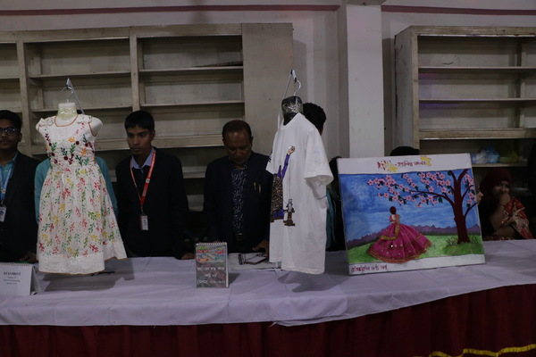
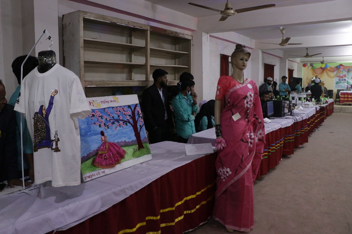

Textile Engineering


কেন টেক্সটাইল ইঞ্জিনিয়ারিং পড়বেন ?
ইঞ্জিনিয়ার একটি ইংরেজি শব্দ যার অর্থ প্রকৌশলী। ইঞ্জিনিয়ারিং মানে হচ্ছে
প্রকৌশলের মাধ্যমে কোন কাজ সুসম্পন্ন করাকে বুঝায়। বিশ্বায়নের এই যুগে শিল্প
ইন্ডাস্ট্রির সংখ্যা ক্রমশই দ্রুত গতিতে বাড়ছে। আর এ কারণেই বাড়ছে
ইঞ্জিনিয়ারিং শিক্ষার গুরুত্ব। বর্তমানে বাংলাদেশে জনপ্রিয় শিল্প গুলোর মধ্যে
অন্যতম শিল্প হচ্ছে টেক্সটাইল শিল্প। বর্তমান প্রযুক্তির এই যুগে যে কয়টি পেশার
সবচেয়ে বেশি চাহিদা রয়েছে তার মধ্যে টেক্সটাইল সেক্টর হল অন্যতম। তাছাড়া
বাংলাদেশ ইতিমধ্যেই টেক্সটাইল শিল্পের উন্নতির চরম শিখরে পৌছেঁ গেছে। ফলে এই
শিল্পে দক্ষতা সম্পন্ন টেক্সটাইল ইঞ্জিনিয়ারদের চাহিদা ব্যাপক হারে দিন দিন বৃদ্ধি পাচ্ছে। নিশ্চিত কর্মসংস্থানের
একমাত্র এবং পরীক্ষিত মাধ্যম হচ্ছে
ইঞ্জিনিয়ারিং শিক্ষা। সারা বিশ্বে জেনারেল শিক্ষার চেয়ে বর্তমানে কারিগরি শিক্ষা
বেশি জনপ্রিয় ও মর্যাদাপূর্ণ হয়ে উঠেছে। তাই প্রকৌশল জ্ঞান কাজে লাগিয়ে অতি
সহজ ভাবে, কম সময়ে, কম খরচে, কম জনশক্তিতে কাজ করা যায়।
ডিপ্লোমা ইন টেক্সটাইল ইঞ্জিনিয়ারিং এর ভবিষ্যৎ কি?
টেক্সটাইল ইঞ্জিনিয়ারিং বাংলাদেশের একটি গুরুত্বপূর্ণ ক্ষেত্র, যেখানে টেক্সটাইল
উৎপাদনের দীর্ঘ ইতিহাস বহু শতাব্দী আগের। দেশটি তার সমৃদ্ধ টেক্সটাইল
ঐতিহ্যের জন্য পরিচিত এবং বিশ্বের বৃহত্তম টেক্সটাইল রপ্তানিকারকদের মধ্যে
একটি হয়ে উঠেছে। সাম্প্রতিক বছরগুলিতে, বাংলাদেশ টেক্সটাইল ইঞ্জিনিয়ারিংয়ে
বিনিয়োগে বৃদ্ধি পেয়েছে এবং এই ক্ষেত্রে বিশ্বব্যাপী মাথা উঁচু করে দাঁড়ানোর জন্য
নিজের অবস্থান তৈরি করে নিয়েছে । বাংলাদেশের টেক্সটাইল শিল্প দেশের অর্থনীতিতে
উল্লেখযোগ্য অবদান রাখে। এই সেক্টরটি 4 মিলিয়নেরও বেশি লোক নিয়োগ করে,
যেখানে নারীরা কর্মশক্তির একটি বড় অংশ । টেক্সটাইল রপ্তানি বাংলাদেশের মোট
রপ্তানির প্রায় 85%, যা এটিকে দেশের অর্থনৈতিক প্রবৃদ্ধির জন্য একটি গুরুত্বপূর্ণ
খাত করে তুলেছে।
বাংলাদেশে চাকরির বাজারে যে কয়টি পেশার অসম্ভব চাহিদা রয়েছে তার মধ্যে
টেক্সটাইল ইঞ্জিনিয়ার অন্যতম। চাহিদার তুলনায় এই পেশাতে যোগ্য প্রার্থীর
সংখ্যা বাংলাদেশে অনেকে কম। বাংলাদেশে টেক্সটাইল শিল্পের দ্রুত বিকাশ ঘটে
চলেছে। বিশ্বমানের টেক্সটাইল শিল্পের কাতারে বাংলাদেশের টেক্সটাইল শিল্প
ইতিমধ্যেই নিজেদেরকে প্রতিষ্ঠিত করতে সক্ষম হয়েছে। যার ফলে এই শিল্পে
প্রয়োজন দক্ষ প্রযুক্তিজ্ঞানসমৃদ্ধ টেক্সটাইল ইঞ্জিনিয়ারদের। ক্রমবর্ধমান
টেক্সটাইল শিল্পের দ্রুত বিকাশের কারণে এই শিল্পে চাকরির রয়েছে অবারিত সুযোগ।
টেক্সটাইল শিল্পে দক্ষ টেক্সটাইল ইঞ্জিনিয়ারদের চাহিদা এতোটাই বেশি যে,
টেক্সটাইল ইঞ্জিনিয়ারিং পাশ করার পূর্বেই ছাত্রদের চাকরি হয়ে যায়।
কাজের ক্ষেত্রঃ
টেক্সটাইল ইঞ্জিনিয়ারদের বাংলাদেশে সরকারি-বেসরকারি দুটি ক্ষেত্রেই
রয়েছে চাকরি বিশাল ক্ষেত্র। সরকারী বিভিন্ন টেক্সটাইল ইন্ডাস্ট্রিতে কাজের
সুযোগের পাশাপাশি বেসরকারি পর্যায়ে স্থাপিত টেক্সটাইল ইন্ডাস্ট্রিতে কাজের
রয়েছে অবারিত সুযোগ। সেই সাথে গার্মেন্টস শিল্পেও টেক্সটাইল ইঞ্জিনিয়ারদের
রয়েছে ব্যপক চাহিদা। দেশী-বিদেশি বিভিন্ন বায়িং অফিসে টেক্সটাইল ইঞ্জিনিয়াররা
যথেষ্ট গুরুত্ব সহকারে কাজ করে চলেছে। তবে টেক্সটাইল ইঞ্জিনিয়ারদের কাজের মূল
জায়গা হিসেবে দেশী-বিদেশী বিভিন্ন টেক্সটাইল শিল্প প্রতিষ্ঠানকেই বিবেচিত করা
হয়। টেক্সটাইল ইন্ডাস্ট্রিতে উৎপাদন কার্যক্রমের সাথে সরাসরি সম্পৃক্ত হয়ে
কাজ করতে হয় তাদের। মূলত একজন টেক্সটাইল ইঞ্জিনিয়ারকে যেকোন ছোট-বড়
টেক্সটাইল ইন্ডাস্ট্রির পণ্য উৎপাদন কার্যক্রমের প্রাণ হিসেবে বিবেচিত করা হয়।